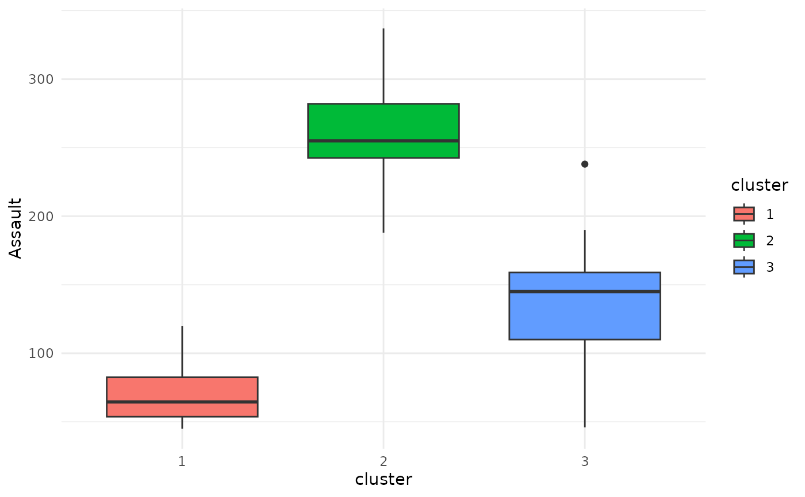
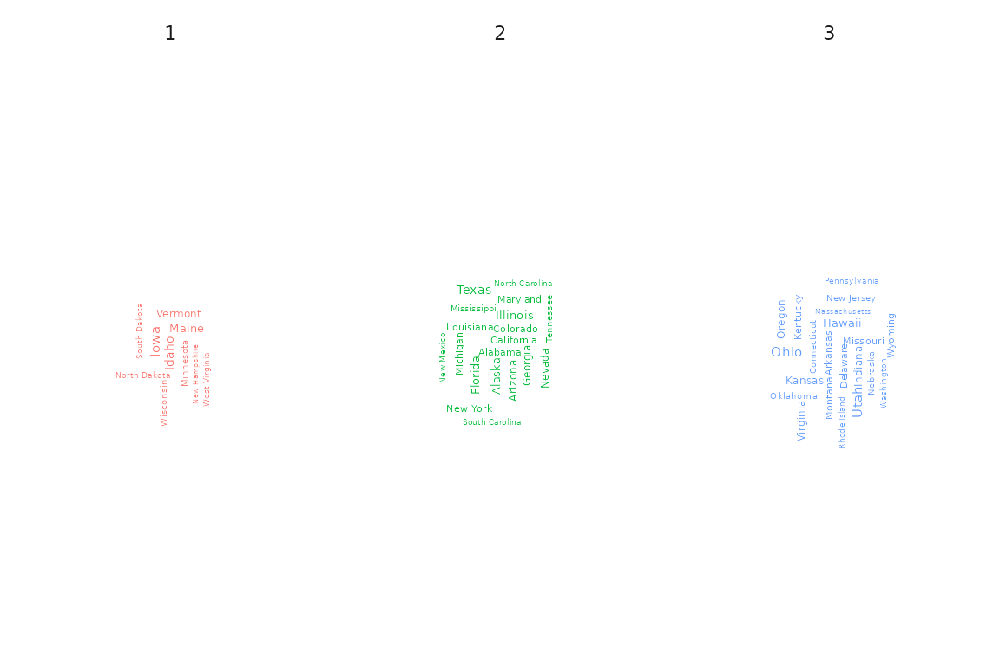
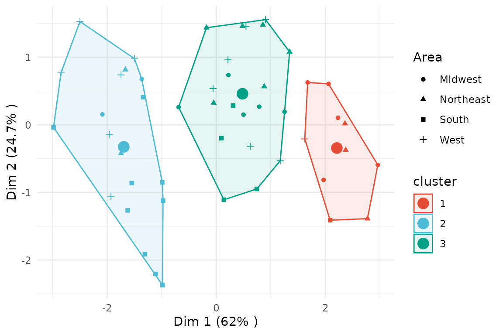

Functionality of fuzzyclara package
Maximilian Weigert, Asmik Nalmpatian, Jana Gauss, Alexander Bauer
27.May 2025
main_functionality.RmdThis document gives an overview of the functionality provided by the
R package fuzzyclara. All examples are based on the dataset
USArrests which lists four criminal statistics for each
federal state in the U.S. in 1973:
- column
Murdercontains the number of murder arrests per 100,000 inhabitants - column
Assaultcontains the number of assault arrests per 100,000 inhabitants - column
UrbanPopcontains the percentage of the population living in urban areas - column
Rapecontains the number of rape arrests per 100,000 inhabitants
Exemplarily, let’s take a quick look at the first rows of
USArrests:
head(USArrests)## Murder Assault UrbanPop Rape
## Alabama 13.2 236 58 21.2
## Alaska 10.0 263 48 44.5
## Arizona 8.1 294 80 31.0
## Arkansas 8.8 190 50 19.5
## California 9.0 276 91 40.6
## Colorado 7.9 204 78 38.7Based on these four dimensions we will try to cluster the federal states into homogeneous groups throughout all of the examples in this vignette.
For starting the analyses, let’s first load the
fuzzyclara package, and additionally the dplyr
package for general data handling.
Clustering
Hard clustering
Applying function fuzzyclara with argument
type = "hard" allows us to perform a hard clustering of the
federal states utilizing the CLARA clustering algorithm. In this
example, let’s compute a cluster solution with 3 clusters based on the
euclidean distance metric.
cc_hard <- fuzzyclara(data = USArrests,
clusters = 3,
metric = "euclidean",
type = "hard",
seed = 3526,
verbose = 0)The output object contains the Medoids – i.e., the most
central / most typical observation for each of the three
clusters –, the Clustering vector specifying for each
observation which cluster it belongs to, and the
Minimum average distance, which is defined as the average
distance between each observation to its cluster, with
Minimum referring to this average distance value of the
outputted optimal cluster solution.
cc_hard## Clustering results
##
## Medoids
## [1] "New Mexico" "Oklahoma" "New Hampshire"
##
## Clustering
## [1] 2 2 2 3 2 2 3 3 2 2 3 1 2 3 1 3 3 2 1 2 3 2 1 2 3 3 3 2 1 3 2 2 2 1 3 3 3 3
## [39] 3 2 1 2 2 3 1 3 3 1 1 3
##
## Minimum average distance
## [1] 1.180717Fuzzy clustering
Alternatively, it is possible to perform a fuzzy clustering by
setting type = "fuzzy". Additionally, the fuzziness
parameter m could be set to any value between 1 and 2.
2, i.e. the default value, encodes full fuzzyness, and 1 encodes no
fuzziness at all, i.e. a hard clustering.
cc_fuzzy <- fuzzyclara(data = USArrests,
clusters = 3,
metric = "euclidean",
type = "fuzzy",
m = 2,
seed = 3526,
verbose = 0)The output contains the same elements as the hard clustering output
above. Additionally it includes a matrix of the
Membership scores. For each federal state this matrix
contains the membership probabilities to the three different
clusters.
cc_fuzzy## Clustering results
##
## Medoids
## [1] "Tennessee" "Kansas" "Oklahoma"
##
## Clustering
## [1] 3 3 2 2 3 3 1 2 3 3 1 1 2 1 1 1 1 3 1 3 2 3 1 3 2 1 1 3 1 2 3 3 3 1 2 2 2 1
## [39] 2 3 1 3 3 2 1 2 2 1 1 2
##
## Minimum average weighted distance
## [1] 1.803336
##
## Membership scores
## Cluster1 Cluster2 Cluster3
## Alabama 0.2040460 0.2391839 0.5567701
## Alaska 0.2719599 0.2995615 0.4284785
## Arizona 0.2912537 0.3570246 0.3517217
## Arkansas 0.3117482 0.3444874 0.3437645
## California 0.2991169 0.3426518 0.3582313
## Colorado 0.2962308 0.3495630 0.3542062
## Connecticut 0.4491401 0.3801099 0.1707500
## Delaware 0.3352479 0.4405673 0.2241849
## Florida 0.2669007 0.3056477 0.4274516
## Georgia 0.1968660 0.2182788 0.5848552
## Hawaii 0.4237938 0.3743009 0.2019053
## Idaho 0.4520930 0.3607393 0.1871677
## Illinois 0.2896688 0.3648928 0.3454384
## Indiana 0.4889041 0.3952814 0.1158145
## Iowa 0.4570114 0.3464276 0.1965610
## Kansas 1.0000000 0.0000000 0.0000000
## Kentucky 0.3795356 0.3379237 0.2825408
## Louisiana 0.2186218 0.2534421 0.5279361
## Maine 0.4305496 0.3517018 0.2177486
## Maryland 0.2487187 0.3029895 0.4482918
## Massachusetts 0.3913847 0.4194642 0.1891511
## Michigan 0.2493973 0.2973997 0.4532030
## Minnesota 0.4998620 0.3431076 0.1570304
## Mississippi 0.2589493 0.2777979 0.4632528
## Missouri 0.2766903 0.3846825 0.3386273
## Montana 0.4634338 0.3476314 0.1889348
## Nebraska 0.5706268 0.3113644 0.1180088
## Nevada 0.2804828 0.3157030 0.4038142
## New Hampshire 0.4478725 0.3480498 0.2040777
## New Jersey 0.3560591 0.4131753 0.2307656
## New Mexico 0.2477356 0.2998723 0.4523921
## New York 0.2879315 0.3516556 0.3604129
## North Carolina 0.2803112 0.3073087 0.4123801
## North Dakota 0.4100544 0.3479818 0.2419639
## Ohio 0.3856241 0.4649088 0.1494671
## Oklahoma 0.0000000 1.0000000 0.0000000
## Oregon 0.3433985 0.4295453 0.2270562
## Pennsylvania 0.5287534 0.3527194 0.1185273
## Rhode Island 0.3877163 0.3943983 0.2178854
## South Carolina 0.2356506 0.2625723 0.5017771
## South Dakota 0.4224678 0.3468786 0.2306536
## Tennessee 0.0000000 0.0000000 1.0000000
## Texas 0.2671642 0.3264780 0.4063578
## Utah 0.4039993 0.4163641 0.1796366
## Vermont 0.3885133 0.3420083 0.2694783
## Virginia 0.3228721 0.4775930 0.1995348
## Washington 0.3711711 0.4483203 0.1805086
## West Virginia 0.3948646 0.3405676 0.2645678
## Wisconsin 0.4704313 0.3477120 0.1818566
## Wyoming 0.4126438 0.4250942 0.1622620Clustering with self-defined distance function and other distance functions
It is possible to pass your own distance function to function
fuzzyclara through the argument metric, as
shown in the following example and as explained in
?fuzzyclara.
# define a quadratic distance function
dist_function <- function(x, y) {
sqrt(sum((x - y)^2))
}
cc_dist <- fuzzyclara(data = USArrests,
clusters = 3,
metric = dist_function,
type = "fuzzy",
m = 2,
seed = 3526,
verbose = 0)
cc_dist## Clustering results
##
## Medoids
## [1] "Tennessee" "Kansas" "Oklahoma"
##
## Clustering
## [1] 3 3 2 2 3 3 1 2 3 3 1 1 2 1 1 1 1 3 1 3 2 3 1 3 2 1 1 3 1 2 3 3 3 1 2 2 2 1
## [39] 2 3 1 3 3 2 1 2 2 1 1 2
##
## Minimum average weighted distance
## [1] 1.803336
##
## Membership scores
## Cluster1 Cluster2 Cluster3
## Alabama 0.2040460 0.2391839 0.5567701
## Alaska 0.2719599 0.2995615 0.4284785
## Arizona 0.2912537 0.3570246 0.3517217
## Arkansas 0.3117482 0.3444874 0.3437645
## California 0.2991169 0.3426518 0.3582313
## Colorado 0.2962308 0.3495630 0.3542062
## Connecticut 0.4491401 0.3801099 0.1707500
## Delaware 0.3352479 0.4405673 0.2241849
## Florida 0.2669007 0.3056477 0.4274516
## Georgia 0.1968660 0.2182788 0.5848552
## Hawaii 0.4237938 0.3743009 0.2019053
## Idaho 0.4520930 0.3607393 0.1871677
## Illinois 0.2896688 0.3648928 0.3454384
## Indiana 0.4889041 0.3952814 0.1158145
## Iowa 0.4570114 0.3464276 0.1965610
## Kansas 1.0000000 0.0000000 0.0000000
## Kentucky 0.3795356 0.3379237 0.2825408
## Louisiana 0.2186218 0.2534421 0.5279361
## Maine 0.4305496 0.3517018 0.2177486
## Maryland 0.2487187 0.3029895 0.4482918
## Massachusetts 0.3913847 0.4194642 0.1891511
## Michigan 0.2493973 0.2973997 0.4532030
## Minnesota 0.4998620 0.3431076 0.1570304
## Mississippi 0.2589493 0.2777979 0.4632528
## Missouri 0.2766903 0.3846825 0.3386273
## Montana 0.4634338 0.3476314 0.1889348
## Nebraska 0.5706268 0.3113644 0.1180088
## Nevada 0.2804828 0.3157030 0.4038142
## New Hampshire 0.4478725 0.3480498 0.2040777
## New Jersey 0.3560591 0.4131753 0.2307656
## New Mexico 0.2477356 0.2998723 0.4523921
## New York 0.2879315 0.3516556 0.3604129
## North Carolina 0.2803112 0.3073087 0.4123801
## North Dakota 0.4100544 0.3479818 0.2419639
## Ohio 0.3856241 0.4649088 0.1494671
## Oklahoma 0.0000000 1.0000000 0.0000000
## Oregon 0.3433985 0.4295453 0.2270562
## Pennsylvania 0.5287534 0.3527194 0.1185273
## Rhode Island 0.3877163 0.3943983 0.2178854
## South Carolina 0.2356506 0.2625723 0.5017771
## South Dakota 0.4224678 0.3468786 0.2306536
## Tennessee 0.0000000 0.0000000 1.0000000
## Texas 0.2671642 0.3264780 0.4063578
## Utah 0.4039993 0.4163641 0.1796366
## Vermont 0.3885133 0.3420083 0.2694783
## Virginia 0.3228721 0.4775930 0.1995348
## Washington 0.3711711 0.4483203 0.1805086
## West Virginia 0.3948646 0.3405676 0.2645678
## Wisconsin 0.4704313 0.3477120 0.1818566
## Wyoming 0.4126438 0.4250942 0.1622620You can also use other distance functions from the proxy
package like Gower, Manhattan etc. In order to specify arguments of the
distance metric (e. g. p for Minkowski distance), you can use a
self-defined distance function.
# Example 1: Manhattan distance
cc_manh <- fuzzyclara(data = USArrests,
clusters = 3,
metric = "manhattan",
samples = 1,
sample_size = NULL,
type = "hard",
seed = 3526,
verbose = 0)
cc_manh## Clustering results
##
## Medoids
## [1] "New Mexico" "Oklahoma" "New Hampshire"
##
## Clustering
## [1] 2 2 2 3 2 2 1 3 2 2 3 1 2 3 1 3 3 2 1 2 3 2 1 2 3 3 3 2 1 3 2 2 2 1 3 3 3 3
## [39] 3 2 1 2 2 3 1 3 3 1 1 3
##
## Minimum average distance
## [1] 2.011671
# Example 2: Minkowski distance with parameter 'p = 1'
dist_mink <- function(x, y) {
proxy::dist(list(x, y), method = "minkowski", p = 1)
}
cc_mink <- fuzzyclara(data = USArrests,
clusters = 3,
metric = dist_mink,
samples = 1,
sample_size = NULL,
type = "hard",
seed = 3526,
verbose = 0)
cc_mink## Clustering results
##
## Medoids
## [1] "New Mexico" "Oklahoma" "New Hampshire"
##
## Clustering
## [1] 2 2 2 3 2 2 1 3 2 2 3 1 2 3 1 3 3 2 1 2 3 2 1 2 3 3 3 2 1 3 2 2 2 1 3 3 3 3
## [39] 3 2 1 2 2 3 1 3 3 1 1 3
##
## Minimum average distance
## [1] 2.011671Select optimal number of clusters
To evaluate the optimal number of clusters for your application, you
can define a to be evaluated clusters_range in function
evaluate_cluster_numbers. The function produces a scree
plot to compare the cluster solutions.
cc_number <- evaluate_cluster_numbers(
data = USArrests,
clusters_range = 2:6,
metric = "euclidean",
type = "hard",
seed = 3526,
verbose = 0
)
cc_number
Plot of clustering results
This section showcases all types of visualizations implemented in
fuzzyclara. To have some more exemplary data to plot, let’s
first add the State (i.e., the name of the federal state)
and the Area (i.e., West / Midwest / South / Northeast)
information as proper columns to the data.
# define state areas
states_west <- c("Washington", "Oregon", "California", "Nevada", "Arizona",
"Idaho", "Montana", "Wyoming", "Colorado", "New Mexico",
"Utah", "Hawaii", "Alaska")
states_south <- c("Texas", "Oklahoma", "Arkansas", "Louisiana", "Mississippi",
"Alabama", "Tennessee", "Kentucky", "Georgia", "Florida",
"South Carolina", "North Carolina", "Virginia", "West Virginia")
states_midwest <- c("Kansas", "Nebraska", "South Dakota", "North Dakota",
"Minnesota", "Missouri", "Iowa", "Illinois", "Indiana",
"Michigan", "Wisconsin", "Ohio")
states_northeast <- c("Maine", "New Hampshire", "New York", "Massachusetts",
"Rhode Island", "Vermont", "Pennsylvania", "New Jersey",
"Connecticut", "Delaware", "Maryland")
# enrich data with 'State' and 'Area' information as proper columns
USArrests_enriched <- USArrests %>%
mutate(State = rownames(USArrests),
State = factor(State),
Area = case_when(State %in% states_west ~ "West",
State %in% states_south ~ "South",
State %in% states_midwest ~ "Midwest",
State %in% states_northeast ~ "Northeast"),
Area = factor(Area))Boxplot
Simply applying the general plot function to an object
of class fuzzyclara we can use boxplots to visualize the
differences between the clusters regarding a metric variable. In this
example, let’s compare the distribution of the Assault
variable between the clusters obtained using the hard clustering
approach.
plot(x = cc_hard,
data = USArrests_enriched,
variable = "Assault") 
Barplot
If the variable that should be plotted is not metric, but categorical, the function defaults to displaying a stacked bar plot.
plot(x = cc_hard,
data = USArrests_enriched,
variable = "Area")
Wordcloud
Specifying type = "wordclouds" as an argument to the
plot function, it is possible to draw one wordcloud per
cluster based on a specific variable. Due to the lack of a proper
character variable, we here examplarily apply the wordcloud to the
State variable. Please note, though, that this is obviously
not the standard application for a wordcloud due to every state name
appearing only once in the dataset.
plot(x = cc_hard,
data = USArrests_enriched,
variable = "State",
type = "wordclouds")
Scatterplot
Instead of only displaying the distribution of one single variable,
it is also possible to specify type = "scatterplot" and
both the arguments x_var and y_var, to create
a scatterplot of the data, joint with estimated cluster-specific linear
trends.
plot(x = cc_hard,
data = USArrests_enriched,
type = "scatterplot",
x_var = "Murder",
y_var = "Assault")
For a fuzzy clustering solution, you can additionally enrich the
scatterplot by each observation’s membership probability, plotted as
each point’s transparency level. Simply specify
focus = TRUE:
# plot of all clusters
plot(x = cc_fuzzy,
data = USArrests_enriched,
type = "scatterplot",
x_var = "Murder",
y_var = "Assault",
focus = TRUE)
# plot only of selected clusters, by specifying argument 'focus_clusters'
plot(x = cc_fuzzy,
data = USArrests_enriched,
type = "scatterplot",
x_var = "Murder",
y_var = "Assault",
focus = TRUE,
focus_clusters = 1)PCA
The cluster solution can be visualized based on a Principal Component
Analysis (PCA) by specifying type = "pca" in the base
plot function. Additionally, argument group_by
can be used to specify a variable which should be depicted as different
point shapes.
plot(x = cc_hard,
data = USArrests_enriched,
type = "pca",
group_by = "Area")
For fuzzy clustering, you can focus on one or more clusters and also plot the membership probability.
# plot of all clusters
plot(x = cc_fuzzy,
data = USArrests_enriched,
type = "pca",
focus = TRUE)
# plot only of selected clusters, by specifying argument 'focus_clusters'
plot(x = cc_fuzzy,
data = USArrests_enriched,
type = "pca",
focus = TRUE,
focus_clusters = 1)
Silhouette
A standard silhouette plot can be plotted by setting
type = "silhouette". The output object of the base
plot function will be a list, including the visualization
as element plot, the per-cluster average silhouette value
as element silhouette_table and the overall average
silhouette value as element average_silhouette_width.
silhouettes <- plot(x = cc_hard,
data = USArrests,
type = "silhouette")
silhouettes$plot
silhouettes$silhouette_table## Cluster Size Silhouette width
## 1 1 10 0.4604416
## 2 2 19 0.2757843
## 3 3 21 0.2797126
silhouettes$average_silhouette_width## [1] 0.3143656Fuzzy clustering: Threshold for membership scores
As an additional option for the PCA plot for fuzzy clustering
solutions, it is possible to set the memebership_threshold
argument. All observations with a membership probability above this
threshold will be recognized as being part of the respective core
cluster and will be highlighted accordingly in the PCA plot.
If we set membership_threshold = 0 all observations
belonging to one cluster are part of its core cluster.
plot(x = cc_fuzzy,
data = USArrests_enriched,
type = "pca",
variable = "Assault",
membership_threshold = 0)If we instead set membership_threshold = 0.5, only the
few observations with a membership probability above 0.5 will be
highlighted as being part of the core cluster.
plot(x = cc_fuzzy,
data = USArrests_enriched,
type = "pca",
variable = "Assault",
membership_threshold = 0.5)The argument membership_threshold has a similar effect
on scatterplots.
# scatterplot with membership_threshold 0
plot(x = cc_fuzzy,
data = USArrests_enriched,
type = "scatterplot",
x_var = "Murder",
y_var = "Assault",
membership_threshold = 0)
# scatterplot with membership_threshold 0.5
plot(x = cc_fuzzy,
data = USArrests_enriched,
type = "scatterplot",
x_var = "Murder",
y_var = "Assault",
membership_threshold = 0.5)